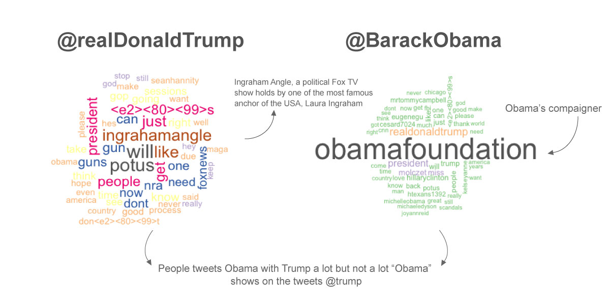

It has been 1 year and (almost) 2 monthes since Donald Trump became the president of the United States. The heatted discussion about whether he's doing his job well, whether he's suitable for the position and whether he's better than his predecessor keeps going on on the social media.
Some of the very first things Trump had done in his presidency were to overturn the last president's accomplishments, while Barack Obama has been trying hard to hold on to his objectives by attending various political activities since he left the White House, it somehow gives the people the impression that the two are on each other's opposition. There have been many analysis, arguments, opinions and comparison about Trump and Obama in terms of their domestic policies, foreign policies, public image or even family members. However, what's the general public's opinions towards them on social media?
In order to get a clear image on the American public social media's feeling on the two presidents, the following twitter sentiment analysis was conducted.
First of all, 10000 tweets with "@BarackObama" and "@realDonaldTrump were captured seperatly. Then, the same procudure was done again on each American states of the following: Arizona, California, Florida, Massachusetts, North Carolina, Texas, Virginia, Washington DC.
The reason for setting "@" as search words instead of "#" (hashtags) was that, on Twitter, people often use "@" to talk or reply to soembody, while they would use "#“ to hashtag certain topic. That is to say, by searching the "@", more direct opinion about the two people could be generated.
Looking at the results of the analysis, it's clear that people generally holds opposite opinions towards them, while the tweets on Dnoald Trump have more sentiment than those on Barack Obama.
As the chart above shows, people on Twitter holds stronger emotion on Trump than Obama. Maybe that's because Trump is more accosiated with the current affairs than the previous president does.
Look deeper into the word cloud of the tweets that @ each president, "guns" appears frequently in Donald Trump's. Together with the hot news topics, words like "will", "people", "said" are obiviously seen, they may come from the president's speech or quotes, which shows his devotion on "make America great again".
Interestingly, as he's not in power anymore, Obama's campaigner accounts for a big propotion on the tweets that @ him.
The tweets that @obama are more likely to include Trump than the inverse.
Looking at the 8 states' sentiment on the two presidents.
On a large scale, no matter positive or negative terms, Obama and Trump's results are totally on the contrary to each other. Trump is more welcome in North Carolina, Texas, Florida and Virginia while Obama is more welcome in Calnifornia and Massachusetts.
Arizona and Calnifornia seem to like and hate Obama a lot at the same time. Arizona also doesn't have too much emotion towards Trump.
Compare the y-axis of the two charts, it's clear that the good tweets about the two presidents outnumbered those that talk bad on them.
Here are two tables on which states have the highest number of @ on the two presidents:
| States | Number of @ |
|---|---|
| Texas | 16 |
| Florida | 13 |
| Virginia | 13 |
| Calnifornia | 10 |
| Washington | 8 |
| States | Number of @ |
|---|---|
| Texas | 65 |
| Washington | 31 |
| Illinois | 14 |
| Oregon | 11 |
| Calnifornia | 11 |
According to the result, people in Texas @s the two presidents a lot. Calnifornia and Washington are also hot states.
The number of @BarackObama in Texas was oddly high in the time period, two quaters of them come from a Texas city called Arlingon, probably some campaign was going on at that time?
Credit to: bootstrap template, plotly.